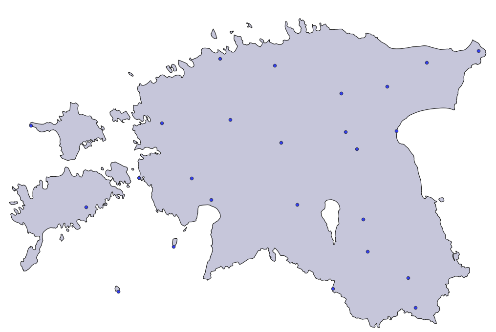
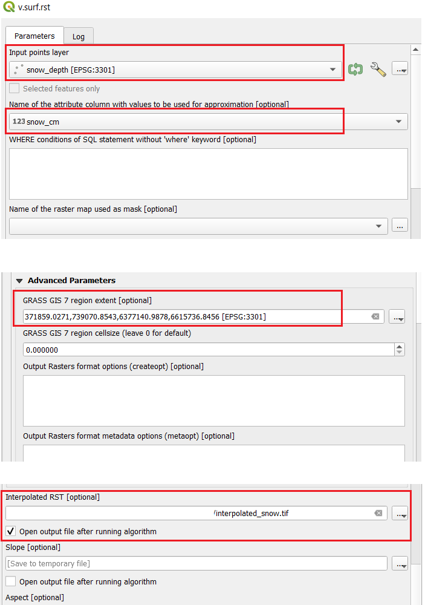
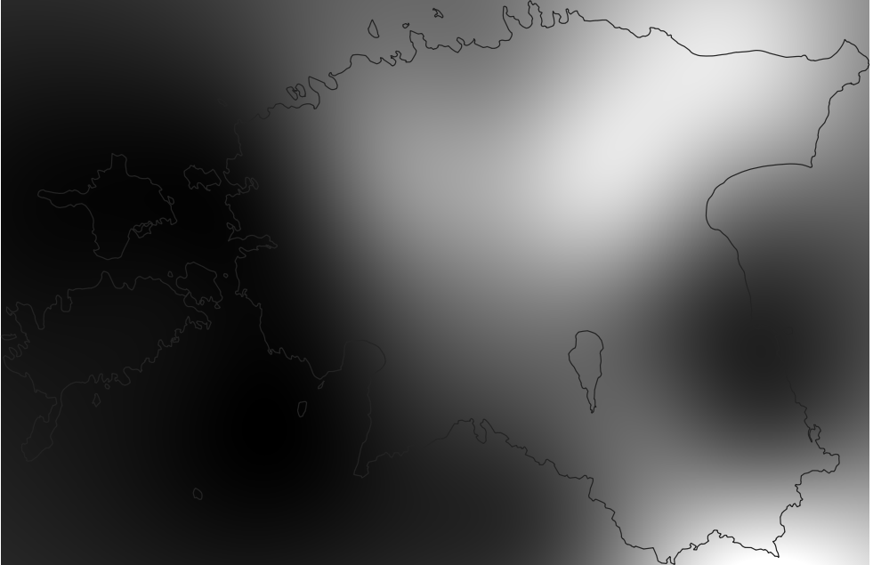
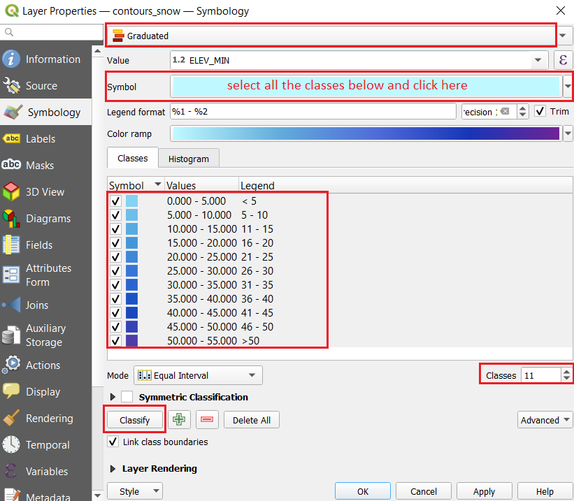
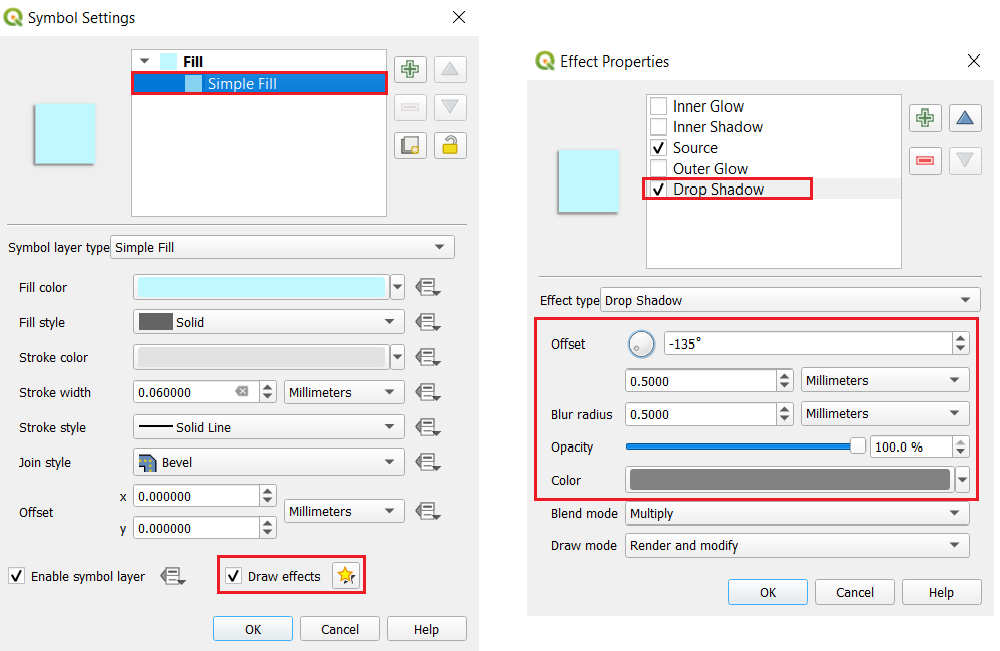
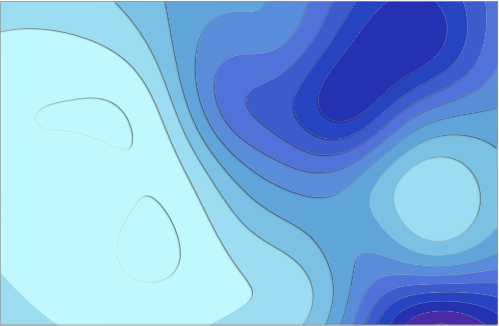
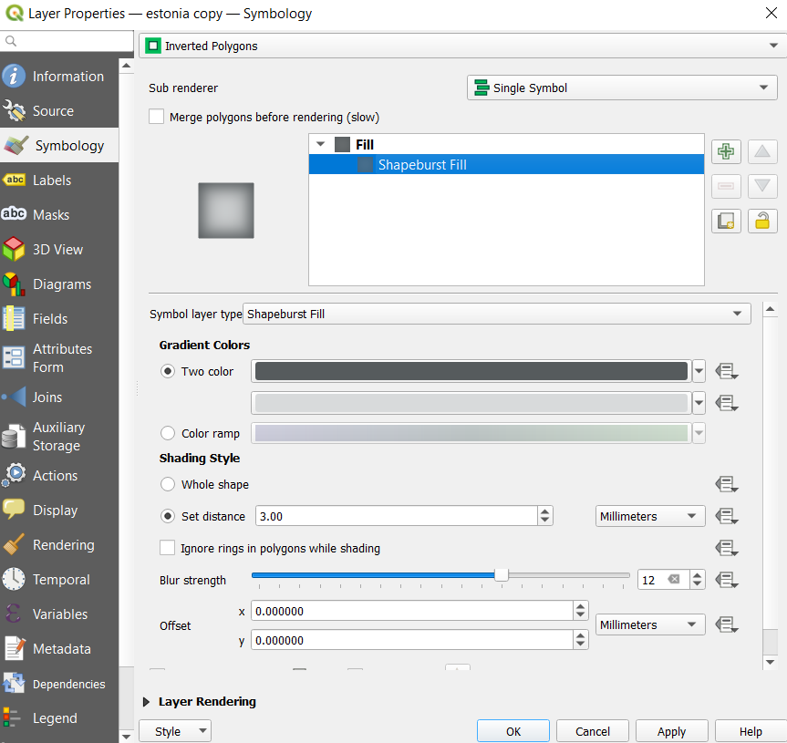
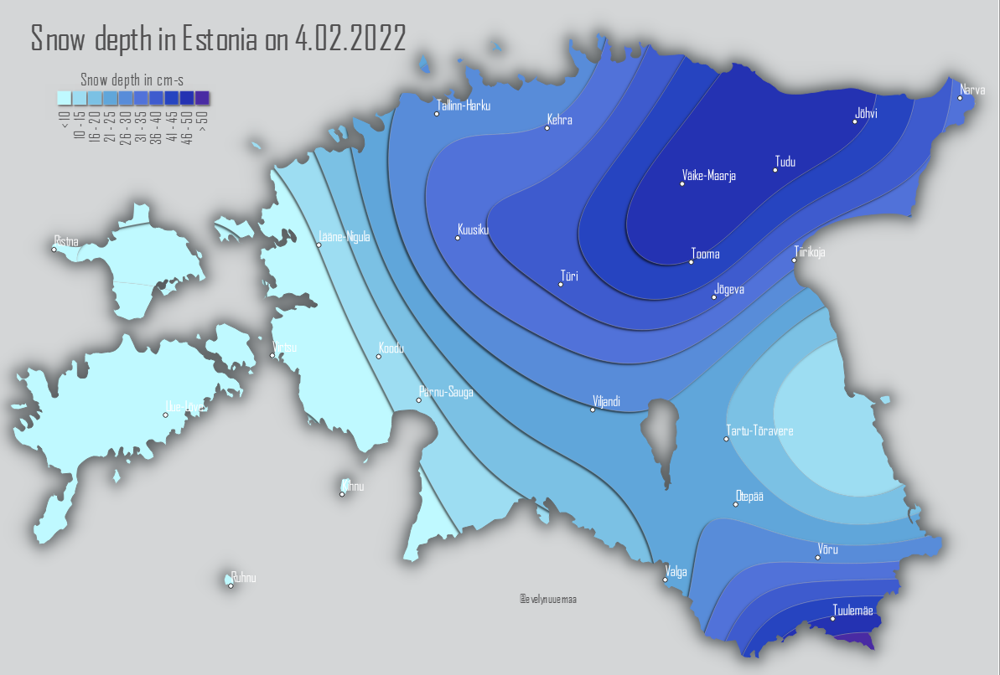
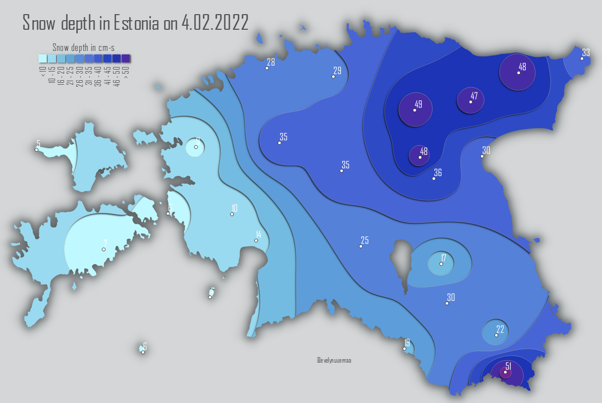

I’m not sure where the paper cut style originates but I guess it has been around in the design world already long time. However, likely one of the first GIS-approaches was done by John Nelson with ArcPro. This is also available as style for ArcPro. However, I aimed to create the same style with QGIS and the mapping theme was inspired by the beautiful snow this winter in Estonia.
For input data you would need any numerical point data (rain, temperature, snow etc.) that you use for interpolation. As said before, I used snow depth in Estonia on 4th of February 2022. In addition, you would also need the region (country) of your map. In my case, it’s Estonia and the initial data looks like this:

First, we need to use interpolation. There are several option and the simplest is IDW (Inverse Distance Weighted), however, it is know to have a bulls’s eye patterns around data points. Therefore, it is better to use splines. Though splines have also a shortcoming by extending the values outside the original range a bit but they create a more realistic surface than IDW. If you would want to keep the exact original value range then you should use IDW. For this tutorial, exact values are not relevant and we will use splines. Open v.surf.rst tool from the Processing toolbox (yif the tool does not open then close QGIS and reopen QGIS with GRASS). Add your point data as Input points layer and identify the attribute column where the values are what you want to interpolate. All the other parameters can be left as default, except for under the Advanced parameters the region extent should be defined by your study region (->Calculate from layer, and use your region of interest or alternatively use the map canvas extent). From output, we need only the Interpolated RST, therefore, assign appropriate name to this and run the tool.  
Next we can generate contours that can be later shaded for the paper-cut style. Open Contour Polygons from the Processing Toolbox. Add the interpolation output from the previous step as input to this tool. Choose the suitable Interval between the contour lines (in this case 5) and save the output with suitable file name. The output will be contours as polygons which enables to use shading for styling that will create the paper-cut style impression.
Now the fun part - styling. Open the contours' layer’s Symbology and use Graduated color schema, choose appropriate colors and classify. Once the classes exist, select them all and click on the Symbol, so that the Symbol Settings will open. 
Under the Symbol Settings click on the Simple Fill. You can now change the Stroke width and color if you wish. Enable the Draw Effects and click on the yellow star next to it to open the Effect Properties. Enable Drop Shadow and reduce the Blur radius and Offset to approx. 0.5. You might need to change also the Offset direction in degrees. You can apply the changes and see the effect and adjust again once satisfied. 
Eventually should look something like this. 
To finalise the map, you can “crop” it with your study area borders by using Inverted Polygons Symbology. Open the Symbology of your study area layer and change the symbology to Inverted Polygons. This will invert the polygon fill to the outside of the area. If you want to create additional halo-effect, then you may apply Shapeburst Fill to the Fill. You can use two colors for creating the gradient, and set appropriate distance for the gradient.

Finally, you can add the original point data with labels to the map. However, if you want to show the original values on the map then they might not align exactly with the interpolation like said before. Only IDW method would keep the exact ranges. Therefore I will show only weather station names on this map. 
The same map made with IDW interpolation would look like this: 